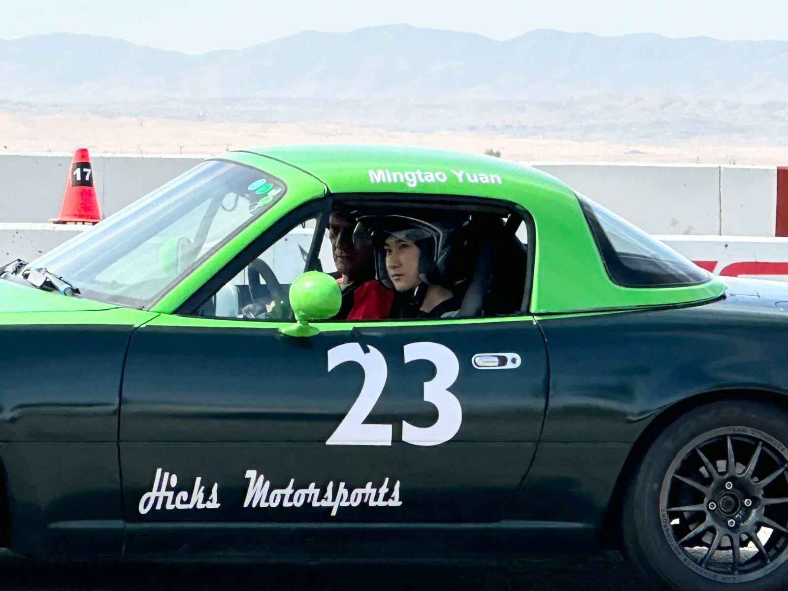

CURIOSITY / ENGINEERING / REAL-WORLD LEARNING
Mingtao
Yuan.
Exploring how ideas become experiments, projects, and new questions.
Explore the featured project ↗FEATURED PROJECT · APRIL 2026
Finding 7.401 seconds.
What three selected laps taught me about corner speed, driving decisions, and learning from telemetry at Buttonwillow.
Read the data study ↗ MOTORSPORT View the story ↗
MOTORSPORT View the story ↗Selected morning and afternoon laps, April 20, 2026.
See the comparison ↗FEATURED INSIGHT / ONE CORNER
One corner. Two lines.
A closer look at an uphill U-turn: two GPS paths, different corner speeds, and a question I could not answer with lap time alone.
Explore the U-turn case study ↗RWTH Aachen
Three weeks exploring how classroom principles connect to real vehicles.
Explore the course ↗TECHNOLOGY EXPERIMENTAI Lab
An experiment in asking questions about racing telemetry with AI.
Explore the prototype ↗Photography
Learning to notice design, movement, and details through a camera.
View photographs ↗Campus Market Hub
Working with fellow students on a proposed student-led exchange platform for the Fryeburg Academy dorm community. The project is being prepared for a limited pilot.
ABOUT
Curiosity in motion.
I am a student at Fryeburg Academy. My interest in cars led me from driving on track to examining telemetry, asking engineering questions, and studying automotive engineering at RWTH Aachen.
I also enjoy building small technology projects, photography, and working with other students on practical ideas for our school community. I use this site to document what I try, what I learn, and what I still want to understand.
Contact: sunnymt0508@gmail.com